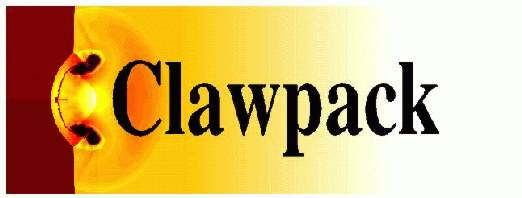

Developers' Workshop and Hackathon
University of Washington
August 25-27, 2016
Description of the workshop
This informal workshop will be held August 25-27, 2016 at the
University of Washington in Seattle. Some talks / discussions will
be scheduled in the mornings that will focus on current and future
developments of the software and open problems. Afternoons and
evenings will be devoted to informal coding sprints to make progress
in several specific directions, to be organized in regard to the
interests of the participants.
General focus areas for the workshop are:
- Development of new visualization tools, in particular for
three-dimensional simulations.
Possible projects include:
- Facilitating the output of only slices of data from a 3D run and
plotting the slices using matplotlib, mayavi, or other tools.
- Full 3D plotting using yt,
VisIt,
ParaView, or other tools.
- Plotting 2D GeoClaw output and topography as surfaces in 3D, and/or
with mapping tools such as GoogleEarth,
cesiumpy, or
ipyleaflet.
- Refactoring I/O routines so VisClaw isn't dependent on PyClaw,
- Developing new framework for specifying plots, e.g.
Griddle.
- Further development of
GeoClaw.
Possible projects include:
- Improving the GeoClaw Riemann solver,
- Refactoring refinement criteria checks / regions,
- Incorporating sediment transport,
- Expanding netCDF capabilities for input and output,
- Spatially-varying Manning coefficients,
- Use of pandas for gauge output,
- Additional documentation and notebooks.
- Other projects of interest to participants, for example:
- Seismic modeling and coupling to tsunami generation,
- Adjoint error estimation,
Follow-up GeoHack Workshop
August 29-30 there will be an informal GeoHack workshop hosted by the UW
eScience Institute,
bringing together researchers from UW and
the region who are interested in sharing knowledge or developing
new tools for dealing with geospatial data. Several GeoClaw
developers plan to participate in this and make further
progress on data and visualization issues. Contact Randy LeVeque if you are
interested in participating. **GeoHack Week:** There will also be a more
extensive
GeoHack Week the week of November 14, 2016. More details to appear.
Tentative Schedule (under construction)
Morning talks and afternoon discussions will take place in
in the Fred Wan Conference Room,
Lewis Hall 208,
with other rooms in Lewis Hall available for break-out groups.
Thursday, August 25
8:30 - 9:00 Coffee in the Lewis Hall Lounge, third floor.
9:00 - 9:15 Welcome and overview
9:15 - 9:45 Visualization overview and discussion
9:45 - 10:15 GeoClaw overview and discussion
10:15 - 10:30 Break
10:30 - 11:45 Lightning talks by all: short introduction to
interests, issues, and goals for the week. (2 slides max)
11:45 - 1:00 Lunch
1:00 - 1:30 Meet to discuss groups and then split up to work
6:30 - Reception
Friday, August 28
Some morning talks
Afternoon hacking
Saturday, August 29
10:30 - 12:00 Presentations by working groups on progress made, and general
discussion of next steps.
Afternoon: Continue working on projects and pull together loose ends.